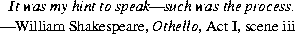

java.lang.Processexec (§20.16.3) of class Runtime returns a reference to a Process
object. The class Process provides methods for performing input from the process,
performing output to the process, waiting for the process to complete, checking
the exit status of the process, and destroying (killing) the process.
Dropping the last reference to a Process instance, thus allowing the Process object to be reclaimed, does not automatically kill the associated process.
There is no requirement that a process represented by a Process object execute asynchronously or concurrently with respect to the Java process that owns the Process object.
public abstract classProcess{ public abstract OutputStreamgetOutputStream(); public abstract InputStreamgetInputStream(); public abstract InputStreamgetErrorStream(); public abstract intwaitFor()
throws InterruptedException; public abstract intexitValue()
throwsIllegalThreadStateException; public abstract voiddestroy(); }
20.15.1 public abstract OutputStream
getOutputStream()
This method returns an OutputStream. Output to the stream is piped into the
standard input stream of the process represented by this Process object.
Implementation note: It is a good idea for the output stream to be buffered.
20.15.2 public abstract InputStream
getInputStream()
This method returns an InputStream. The stream obtains data piped from the
standard output stream of the process represented by this Process object.
Implementation note: It is a good idea for the input stream to be buffered.
20.15.3 public abstract InputStream
getErrorStream()
This method returns an InputStream. The stream obtains data piped from the
error output stream of the process represented by this Process object.
Implementation note: It is a good idea for the input stream to be buffered.
20.15.4 public abstract int
waitFor()
throws InterruptedException
This method causes the current thread to wait, if necessary, until the process represented
by this Process object has terminated. Then the exit value of the process
is returned. By convention, the value 0 indicates normal termination.
If the current thread is interrupted (§20.20.31) by another thread while it is waiting, then the wait is ended and an InterruptedException is thrown.
20.15.5 public abstract int
exitValue()
throws IllegalThreadStateException
If the process represented by this Process object has not yet terminated, then an
IllegalThreadStateException is thrown. Otherwise, the exit value of the process
is returned. By convention, the value 0 indicates normal termination.
20.15.6 public abstract void
destroy()
The process represented by this Process object is forcibly terminated.
Contents | Prev | Next | Index
Java Language Specification (HTML generated by Suzette Pelouch on February 24, 1998)
Copyright © 1996 Sun Microsystems, Inc.
All rights reserved
Please send any comments or corrections to doug.kramer@sun.com